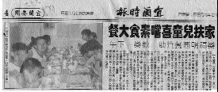
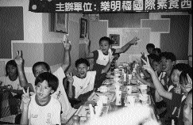
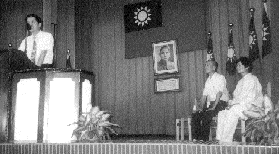
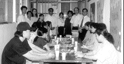
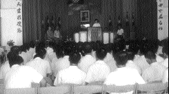

| Reportage des médias |
"L'aide aux familles" |

Selon Zhou, le responsable, le restaurant Loving Food a été créé sur l'idée "d'amour" tout en servant aux clients des mets délicieux et nutritifs. La fête d'hier a eu lieu dans l'espoir de partager des moments de bonheur avec des enfants de familles démunies. Ainsi, ils ont pu faire l'expérience de la chaleur de la société sous un aspect plus lumineux et positif malgré les imperfections de leurs vies.
Sous la conduite des grands frères et sœurs, les enfants ont appris comment se tenir à table à l'occidentale, en utilisant des couteaux et des fourchettes. La jeunesse s'est rapidement transformée en jeunes demoiselles, dames et messieurs.
Quand certains n'utilisaient pas les couverts correctement ou faisaient du bruit avec les assiettes, les enfants éclataient de rire. Lorsque l'on a servi le plat principal, un steak végétarien, les enfants l'ont mangé en utilisant les couverts et en faisant bien attention à mettre en pratique ce qu'ils venaient d'apprendre. Des enfants ont demandé à emporter de la nourriture à leur maman. L'après-midi s'est déroulé dans la joie et les rires.
Selon Lin, le directeur de Family helpers, ces enfants ont rarement la chance de manger dans un restaurant occidental. La majorité viennent de familles qui ont des problèmes financiers, ou dont les parents sont trop occupés pour les emmener au restaurant. Les enfants ont été enchantés de cette journée, de ce festin, qui s'est transformé en premier cadeau pour la nouvelle année scolaire.
|  | Les petits enfants savourent un repas occidental et font attention à leur tenue à table. |
Formose a travaillé pendant longtemps avec une organisation nommée la Grande Illumination, qui s'occupe de détenus dans les prisons. Ces pratiquants ont visité les prisons de Formose pour apporter leur aide et leurs encouragements à ceux qui sont derrière les barreaux, et pour leur présenter les enseignements de Maître et la méthode Guan Yin. La veille du festival d'automne, les initiés ont partagé l'amour de Maître en offrant des gâteaux de Lune et des fruits aux prisonniers dans le centre et le sud de Formose. Sous les auspices de la Grande Illumination, les initiés ont visité le Centre de détention de Nantou et le Centre Juvénile de Changhua, le Centre de Surveillance Juvénile de Kaohsiung, le Centre de Surveillance Juvénile de Tainan et le Centre Juvénile de Tienchung.
Les initiés ont reçu une autorisation spéciale de la part des autorités du Centre Juvénile de Tienchung pour tenir un séminaire d'encouragement et d'inspiration pour les centaines de jeunes détenus. Là-bas, ils ont raconté des histoires de leur passé : comment ils se sont retrouvés dans la clandestinité et ainsi mis la vie de leur famille en danger. Comment ils ont connu Maître et tourné la page et comment la pratique spirituelle avec Maître a complètement changé leur vie. Les initiés ont encouragé les détenus à s'aimer les uns les autres et à prendre soin d'autrui, à supporter les instructions des surveillants, à ne jamais abandonner et avoir confiance en l'avenir.
Quand les autorités du centre ont vu les gâteaux de Lune et les pamplemousses, mangés habituellement au festival d'automne, ils ont été très touchés et ont dit que cela leur faisait penser à la fête d'automne qui approchait à grand pas.
Les initiés sont venus à la prison avec amour et sont repartis avec un tendre sentiment de chaleur.
|  | Le directeur du Centre Juvenile de Tienchung remercie les initiés pour leur visite (assis au milieu se trouve Hsu Cheng-hsiung, le président de l'organisation la Grande Illumination) |
|  | Une visite au Centre de Détention de Nantou |
|  | Les amis initiés racontent leur vie dans la clandestinité et comment ils ont changé après avoir rencontré Maître |